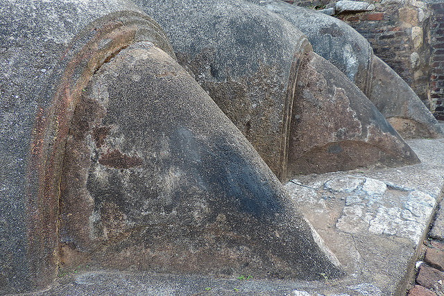
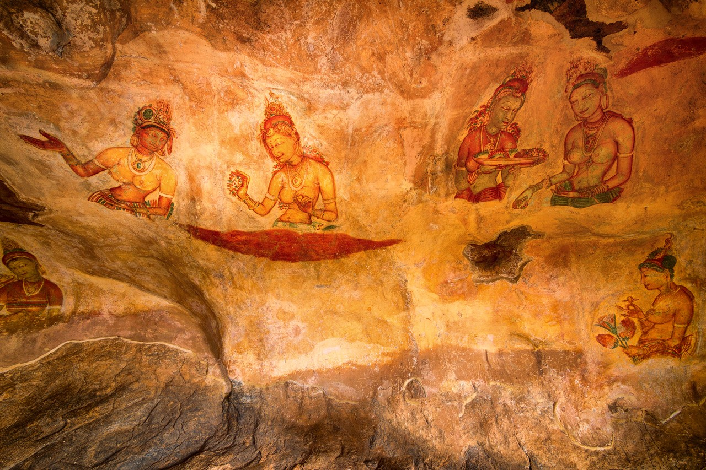
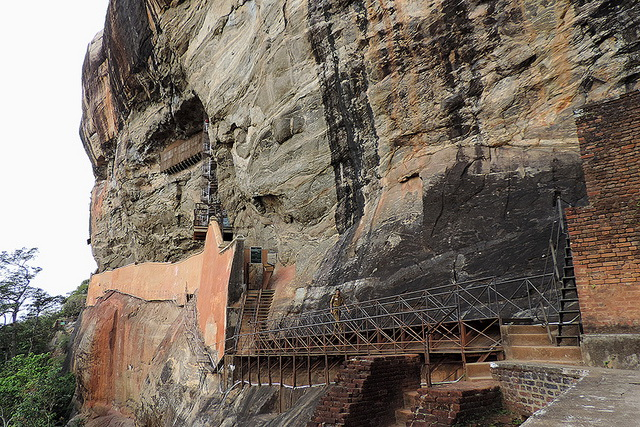

Explore the unknown - By Saadh Jawwadh
Sigiriya is one of the most valuable historical monuments of Sri Lanka.
Referred by locals as the Eighth Wonder of the World this ancient palace and fortress complex has significant archaeological importance
The palace is located in the heart of the island between the towns of Dambulla and Habarane on a massive rocky plateau 370 meters above the sea level.and attracts thousands of tourists every year.
The main entrance is located in the northern side of the rock. It was designed in the form of a huge stone lion, whose feet have survived up to today but the upper parts of the body were destroyed.Thanks to this lion the palace was named Sigiriya. The term Sigiriya originates from the word Sihagri, i.e. Lion Rock.
The western wall of Sigiriya was almost entirely covered by frescoes, created during the reign of Kasyapa. Eighteen frescoes have survived to this day. The frescoes are depicting nude females and are considered to be either the portraits of Kasyapa's wives and concubines or priestess performing religious rituals.
One of the most striking features of Sigiriya is its Mirror wall.In the old days it was polished so thoroughly that the king could see his reflection in it. The Mirror wall is painted with inscriptions and poems written by the visitors of Sigiriya.
The palace and fortress complex is recognized as one of the finest examples of ancient urban planning. Considering the uniqueness of Sigiriya UNESCO declared it a World Heritage site in 1982. Sigiriya is an unmatched combination of urban planning, water engineering, horticulture and arts.